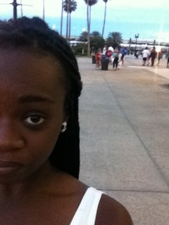

Nicole is a Applied Languages and Intercultural Studies Major.
Since she finished her B.S in 3 years, she figured she would take up Computer Science.
Why not?? Her ultimate dreams are not to program though,
one day you'll see her in the operating room. She plans to start medical school
and be an Anesthesiologist (did we mention that she is pre-MED too?